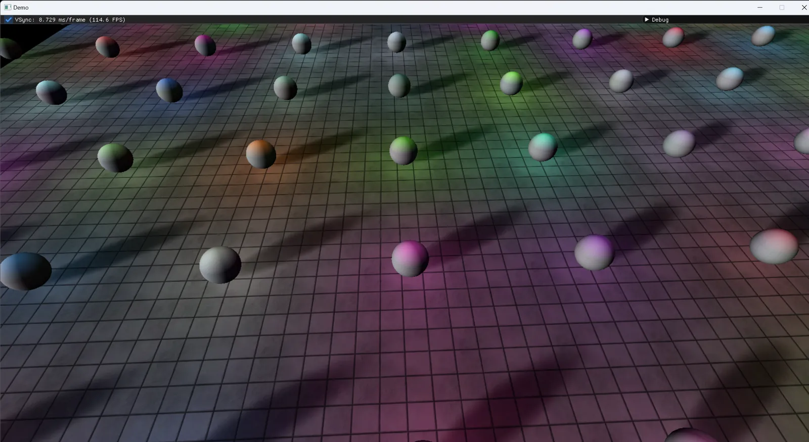
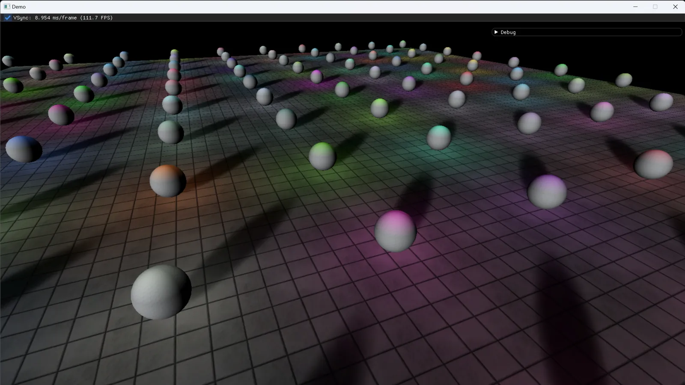
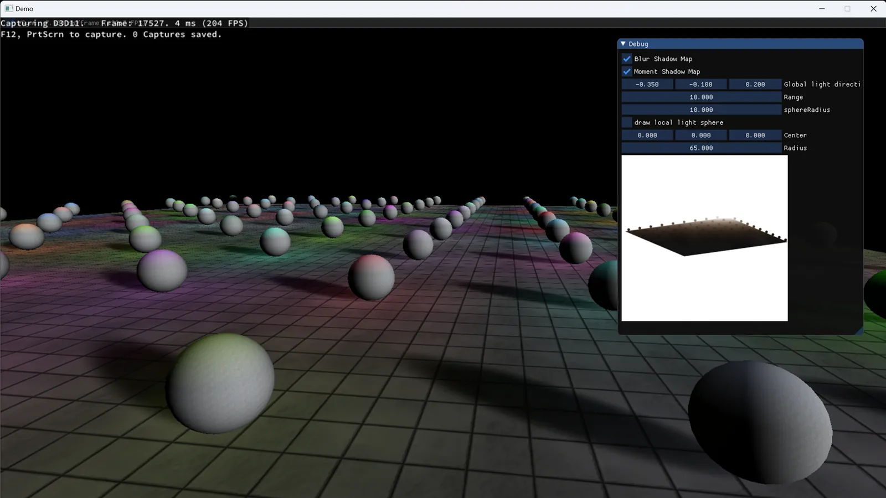
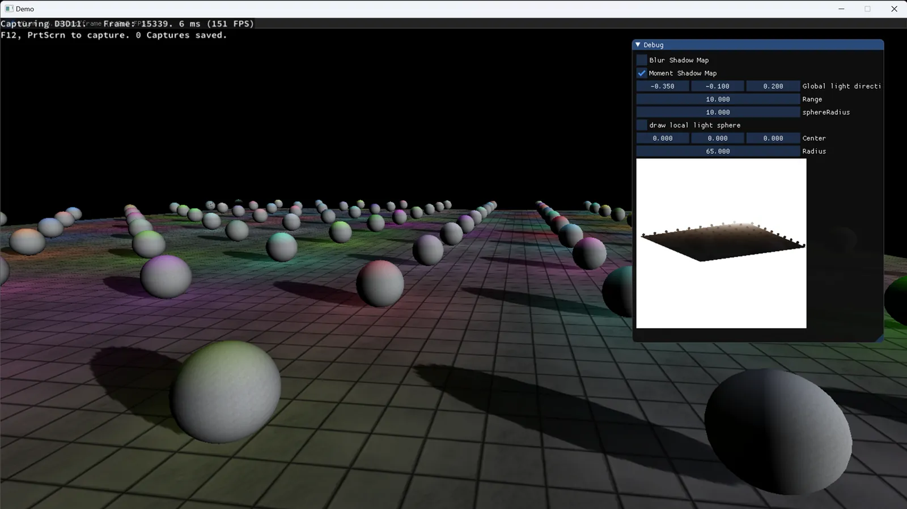
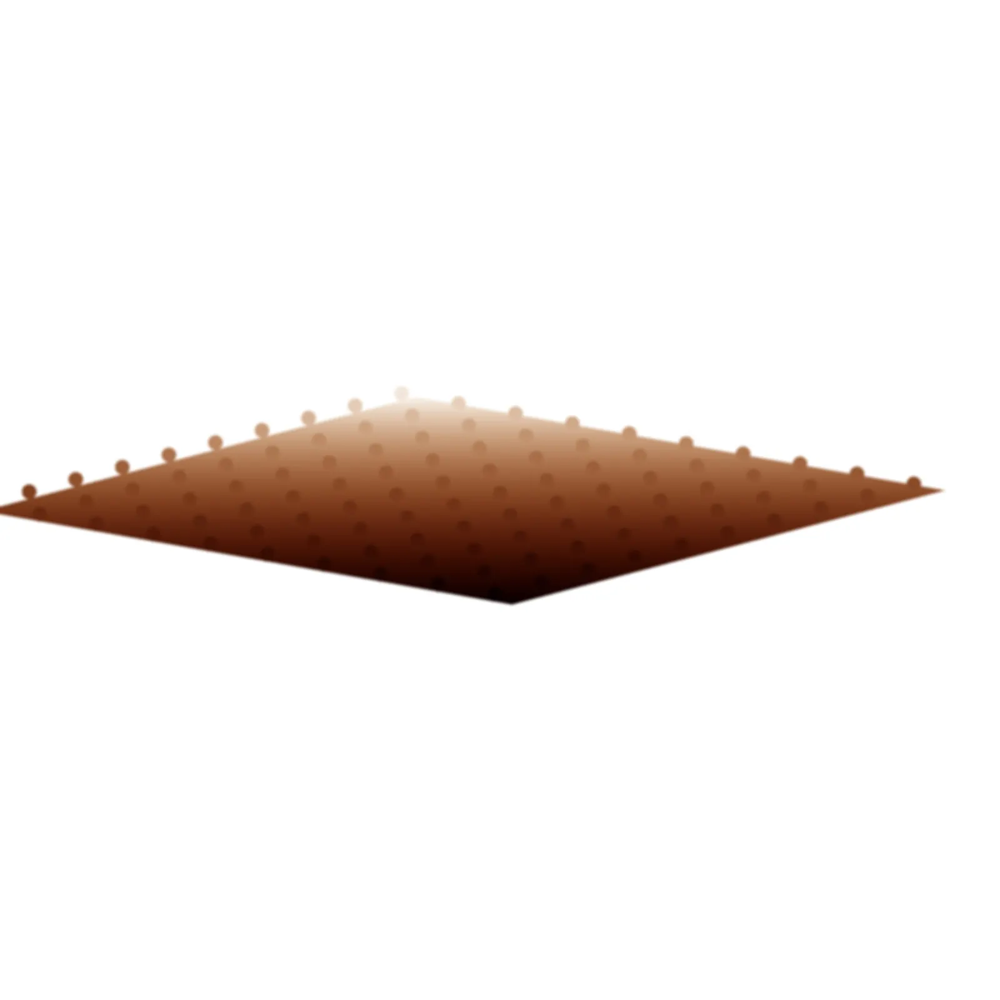

Moment Shadow Mapping
Independent project | C++, Direct3D 11 2023
- Added soft shadows using moment shadow mapping and variance shadow mapping.
- Used compute shaders to blur the moment shadow map with a Gaussian blur.
Aliasing is clearly visible with the unblurred shadow map and disappears once the blur is on.




